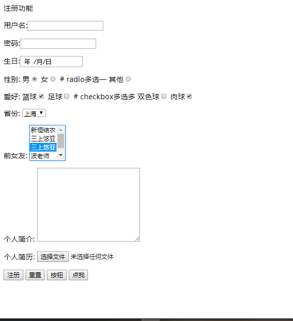

原文出处:本文由博客园博主亚峰牛皮提供。
原文连接:https://www.cnblogs.com/yafeng666/p/12099518.html
原文连接:https://www.cnblogs.com/yafeng666/p/12099518.html
初始前端
一、夺命三问
- 理论知识
一、什么是前端？
任何与用户直接打交道的界面都可以称之为是一个前端
比如：
- 电脑显示界面
- 手机界面
- iPad
二、为什么要学前端？
技多不压身
软件开发架构
cs
bs(bs本质就是cs)
web服务的本质
浏览器窗口输入一个网址然后敲回车键发生了那些事
1、朝着指定的服务端发送请求
2、服务端接收相应的请求
3、服务端返回相应的响应
4、浏览器接收响应 按照特定的规则渲染页面展示给用户看
二、HTTP协议
- 四大特性
1、四大特性
1、基于请求响应
一次请求对应一次响应
2、基于TCP/IP作用于应用层之上的协议
3、无状态
不保留客户端的状态
无论你来多少次 我都待你如初见
cookie session token...
4、无连接
长连接 websocket（类似于http协议的大补丁） 比如：聊天室相关
- 数据格式
请求格式
请求首行（请求方式，协议版本）
请求头（一大推k,v键值对）
请求方式：
1、get请求
朝服务端要资源（获取数据）
类似于浏览器窗口输入www.baidu.com获取百度首页
2、post请求
朝服务端提交数据（提交数据）
类似于登录注册功能
请求体（携带的数据 并不是一直都有 有时候可能是空的 取决于你的请求方式）
响应格式
响应首行
响应头（一大推k,v键值对）
响应体（浏览器展示给用户看的数据）- 响应状态码
用数字来表示一大推展示信息
1XX:服务端已经成功接收到客户端的数据正在处理 你也可以继续提交
2xx:200请求成功 服务端已经返回了你想要的数据
3xx:重定向（原本想访问A, 但是内部自动给你传到了转到B上面）
4xx:404请求资源不存在，403资源存在但是当前你不具备请求该资源的条件
5xx:500服务端内部错误 可能机房着火了，也可能机房死机了， 或爆炸了
公司内部可以自己定制自己的响应状态码
三、HTML
- 超文本标记语言
在学习HTML的时候 你只需要记住每一个标签是什么意思就可以了
如果你想让你的页面能够被浏览器识别并且展示出好看的样子 你就必须要写HTML代码
浏览器能够识别的语言非常少
HTML/XML css js
扩展知识点：XML也可以书写前端页面 主要用于odoo框架中 书写企业内部管理软软件（ERP）
- html注释
HTML注释
注释是代码之母
单行注释：<!--单行-->
多行注释：<!--
多行注释1
多行注释2
-->
补充：由于HTML页面结构比较复杂 内容比较多 不便于后期的维护 修改
通常在写页面的时候 习惯于 用下面的方式来人为的 划分代码区域
<!--顶部导航样式开始-->
<!--顶部导航样式结束-->
<!--左侧导航样式开始-->
<!--左侧导航样式开始-->
HTML文档结构
<html>
<head></head>: head内放的内容不是给用户看的，是给浏览器去识别相应操作的
<body></body>:body内存放的内容就是浏览器展示给用户看到的花里胡哨的页面
</html>
HTML文档打开方式
1、pycharm自动调用浏览器打开（推荐）
2、手动查找路径之后选择浏览器打开
标签的分类1：
1、双标签
2、自闭和标签- 第一个HTML代码
<!DOCTYPE html>
<html lang="en">
<head>
<meta charset="UTF-8">
<title>亚洲最大的xxx网站</title>
<meta http-equiv="refresh" content="5;URL=https://www.oldboyedu.com">
</head>
<body>
<h1>
hello big big baby~
</h1>
<a href="https://www.mzitu.com">click me</a>
<img src="https://i.meizitu.net/thumbs/2019/12/216914_23b13_236.jpg" alt="">
</body>
</html>四、head内常用的标签
- 常用标签
title：定义网页标题
style：内部支持直接写css代码
link:引入外部的css文件
script:
1、内部可以直接编写js
2、可以通过src属性引用外部js代码
meta：
name属性
keywords
description
什么是URL？
URL：统一资源定位符
五、body内常用标签
- 常用标签
你所看到的花里胡哨的页面 其实内部都是HTML代码 很丑很乱
基本标签
h1~h6:标题标签
s:删除线
b:加粗
u:下划线
i:斜体
p:独占一行
br:换行
hr:分隔符
特殊符号
空格
<h1>001</h1> # 1级标题
<h2>002</h2> # 2级标题
<h3>003</h3> # 3级标题
<h4>004</h4> # 4级标题
<h5>005</h5> # 5级标题
<h6>006</h6> # 6级标题
我是普通文本
<s>我是s</s> # s删除线
<u>我是u</u> # u下划线
<b>我是b</b> # b 加粗
<i>我是i</i> # i 斜体
<p>天生我才必有用 莫使金樽空对月</p> # 空格符一个代表空一格
<br> # 换行符
<p>天生我才必有用 莫使金樽空对月</p>
<hr> # 分隔符
<p>天生我才必有用 莫使金樽空对月</p>
<p>天生我才必有用 莫使金樽空对月</p>
<p>a 大于 b a > b</p> # a > b
<p>a 小于 b a < b</p> # a < b
<p>a&b a & b</p> # a 交 b
<p>人民币 ¥ 1000000000</p> # ￥
<p>版权标识 ©</p>
<p>注册商标 ®</p>
常用标签
div 块儿级标签
span 行内标签
注：这两个标签本身没有任何特殊意义，但是这两个标签确实用的最多的 因为这两个标签是用来做前期的页面布局的
img 图片标签
src
1、可以写一个网站图片地址
2、还可以写本地的图片地址
3、url（自动朝该url发送get请求要数据）
alt
当图片加载不出来的时候 默认展示的提示信息
title
当鼠标悬浮在图片上的时候 展示的提示信息
width，height
修改一个 另一个会自动等比例缩放
若两个都修改图片就会失真
a 链接标签
href
1、放一个url
点击就会跳到该url所对应的资源
target
控制是否在当前页跳转
默认是在当前页跳转
_self
新建页跳转
_blank
锚点功能
href不单单是可以写url 也可以写另外一个a标签的id值
点击就会跳转到该id值所对应的a标签所在的位置
标签应该具备的属性
1、id属性：类似于身份证号 用来唯一标识当前HTML页面的某一个标签
在同一个HTML页面中 id值不能重复
2、class属性：类似于面向对象的继承
直接引用别的类的方式
- body类常用标签
<!DOCTYPE html>
<html lang="en">
<head>
<meta charset="UTF-8">
<title>Title</title>
</head>
<body>
<h1>001</h1> # 1级标题
<h2>002</h2> # 2级标题
<h3>003</h3> # 3级标题
<h4>004</h4> # 4级标题
<h5>005</h5> # 5级标题
<h6>006</h6> # 6级标题
我是普通文本
<s>我是s</s> # s删除线
<u>我是u</u> # u下划线
<b>我是b</b> # b 加粗
<i>我是i</i> # i 斜体
<p>天生我才必有用 莫使金樽空对月</p> # 空格符一个代表空一格
<br> # 换行符
<p>天生我才必有用 莫使金樽空对月</p>
<hr> # 分隔符
<p>天生我才必有用 莫使金樽空对月</p>
<p>天生我才必有用 莫使金樽空对月</p>
<p>a 大于 b a > b</p> # a > b
<p>a 小于 b a < b</p> # a < b
<p>a&b a & b</p> # a 交 b
<p>人民币 ¥ 1000000000</p> # ￥
<p>版权标识 ©</p>
<p>注册商标 ®</p>
</body>
</html>- 常用标签1
<!DOCTYPE html>
<html lang="en">
<head>
<meta charset="UTF-8">
<title>Title</title>
</head>
<body>
<div>
<div>
<div>
<p>
<a href=""></a>
<s></s>
</p>
</div>
</div>
</div>
<p>
我是p
<a href="">alshfkaak</a>
</p>
<a href="">111
<a href=""></a>
</a>
</body>
</html>- 常用标签2
<!DOCTYPE html>
<html lang="en">
<head>
<meta charset="UTF-8">
<title>Title</title>
</head>
<body>
<img src="https://i.meizitu.net/thumbs/2019/12/201498_05a05_236.jpg" alt="这是一张美女图片" width="150px">
<img src="download.jpg" alt="这是个葫芦娃专门收妖精" width="200px">
<a href="https://www.mzitu.com/" target="_self" id="" class="">点我有你好看的哦</a>
<a href="https://www.mzitu.com/" target="_blank">点我有你好看的哦</a>
<a href="" id="d1">页首</a>
<div style="height: 150px;background-color: red"></div>
<a href="" id="d2">中间</a>
<div style="height: 150px;background-color: green"></div>
<a href="#d1">回到顶部</a> # 点击可以回到页首
<a href="#d2">回到中间</a> # 点击可以回到中间
</body>
</html>
六、列表标签
- 列表标签
无序列表（较多）
ul
li
只要页面上出现了比较有规则排列的文本 基本上都可以用无序列表来实现
有序列表
ol
li
标题列表
dl
dt标题
dd内容- 列表标签
<!DOCTYPE html>
<html lang="en">
<head>
<meta charset="UTF-8">
<title>Title</title>
</head>
<body>
<p>无序列表</p>
<ul>
<li>111</li>
<li>222</li>
<li>333</li>
</ul>
<p>有序列表</p>
<ol type="1">
<li>哈哈哈</li>
<li>呵呵呵</li>
<li>嘿嘿嘿</li>
</ol>
<p>标题列表</p>
<dl>
<dt>标题1</dt>
<dd>内容1</dd>
<dd>内容2</dd>
<dt>标题2</dt>
<dd>内容1</dd>
<dd>内容2</dd>
<dt>标题3</dt>
<dd>内容1</dd>
<dd>内容2</dd>
<dd>内容3</dd>
</dl>
</body>
</html>
七、表格标签
- 演示
展示网站数据的时候 一盘情况下可以使用表格标签
<table>
<thead>
<tr>
<th></th>
<tr>
</thead>
<tbody>
<tr>
<td></td>
<tr>
</tbody>
</table>
先写表格标签 在写结构 然后写数据
一个str 就是一行
th和td的区别
一个加粗 一个不加粗
通常情况下表头用th 表单内容用td
- 表格标签
<!DOCTYPE html>
<html lang="en">
<head>
<meta charset="UTF-8">
<title>Title</title>
</head>
<body>
<table border="5"> # 设置边框的尺寸
<thead>
<tr> # 一个tr就是一行
<th>用户名</th> # 表头用th加粗
<th>年龄</th>
<th>爱好</th>
</tr>
</thead>
<tbody>
<tr>
<td>yafeng</td> # 表内容用td不加粗
<td>18</td>
<td>study</td>
</tr>
<tr>
<td rowspan="2">Jason</td> # rowspan行宽为2，所以总共就2行
<td>73</td>
<td colspan="2">DBJ</td>
</tr>
<tr>
<td>tank</td>
<td>84</td>
<td>piao</td>
</tr>
</tbody>
</table>
</body>
</html>

八、表单标签
- 演示
form标签
获取用户输入（输入 选择 上传文件....）并且将数据打包发送给后端
action参数：
用来控制数据提交的路径（到底是哪个后端服务器提交数据）
三种写法：
1、不写 默认就是朝着当前页面所在的地址提交数据
2、全路径比如（http://www.baidu.com）
3、只写路径后缀（/index/）
获取用户输入的 input标签 该标签是一个行内标签
input类似于前端的变形金刚
type属性
text 普通文本
password 密文
date 日期
radio 多选一
checkbox 多选多
默认选种 checked="checked"
当标签的属性名和属性值相同的时候 可以只写属性名
女<input type="radio" name="gender" checked="checked">
简写
女<input type="radio" name="gender" checked>
reset 重置
button 普通按钮
submit 触发form表单提交动作
file 获取文件
select标签 下拉框
一个个选项就是一个个option标签
默认是单选的
可以加一个multiple该成多选
<select name="" id="" multiple>
<option value="" selected="selected">新恒结衣</option>
<option value="">三上悠亚</option>
<option value="" selected>三上悠亚</option>
<option value="">波老师</option>
<option value="">苍老师</option>
</select>
如何让option标签默认选中
加selected="selected"也可简写selected
<select name="" id="" multiple>
<option value="" selected="selected">新恒结衣</option>
<option value="">三上悠亚</option>
<option value="" selected>三上悠亚</option>
<option value="">波老师</option>
<option value="">苍老师</option>
</select>
textarea标签 获取大段文本
label 通常是配合input一起使用的
for用来填写对应的input标签id值
点击label标签的内容 会自动让对应的input标签聚焦
能耐触发form表单提交数据的按钮
<input type='submit'>
可以通过value属性来指定按钮文本内容
<input type='submit' value='注册'>
<button>点我</button>
input获取到的用户输入就类似于是字典中的value
input中的name属性就类似于是字典中的key
- form表单
<!DOCTYPE html>
<html lang="en">
<head>
<meta charset="UTF-8">
<title>Title</title>
</head>
<body>
<p>注册功能</p>
<form action="">
<p>
<label for="d1">用户名:<input type="text" id="d1" name="username"></label>
</p>
<p>密码:<input type="password" name="password"></p>
<p>生日:<input type="date"></p>
<p>性别:
男<input type="radio" name="gender" checked>
女<input type="radio" name="gender"> # radio多选一
其他<input type="radio" name="gender">
</p>
<p>爱好:
篮球<input type="checkbox" name="hobby" checked>
足球<input type="checkbox" name="hobby"> # checkbox多选多
双色球<input type="checkbox" name="hobby">
肉球<input type="checkbox" name="hobby" checked>
</p>
<p>省份:
<select name="province" id="">
<option value="">北京</option>
<option value="">上海</option>
<option value="">深圳</option>
</select>
</p>
<p>前女友:
<select name="" id="" multiple> # multiple多选
<option value="" selected="selected">新恒结衣</option>
<option value="">三上悠亚</option>
<option value="" selected>三上悠亚</option> #社默认值
<option value="">波老师</option>
<option value="">苍老师</option>
</select>
</p>
<p>个人简介:
<textarea name="" id="" cols="30" rows="10"></textarea>
</p>
<p>个人简历:
<input type="file">
</p>
<p>
<input type="submit" value="注册">
<input type="reset" value="重置">
<input type="button" value="按钮">
<button>点我</button>
</p>
</form>
</body>
</html>
九、标签的分类2
- 演示
标签的分类2
1.块儿级标签
独占一行 h1~h6 p br hr div
1.块儿级标签内部可以嵌套任意的块儿级标签和行内标签
2.特列:p虽然是块儿级标签 但是它的内部只能嵌套行内标签 不能嵌套块儿级标签
如果嵌套了 没有问题 知识不符合html语法规范
2.行内标签 u s i b span
自身文本多大 就占多大
行内标签内部不能嵌套块儿级标签和行内标签
书写标签的时候 你只需要写标签的名字 之后tab键就可以自动补全
emmet插件